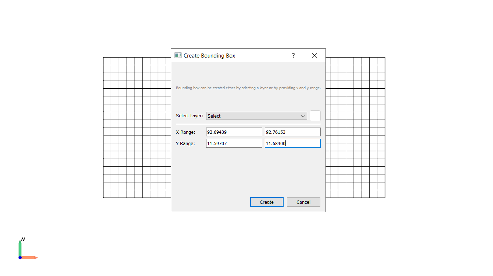
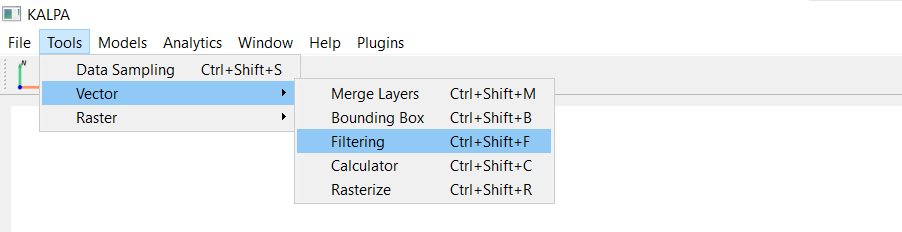
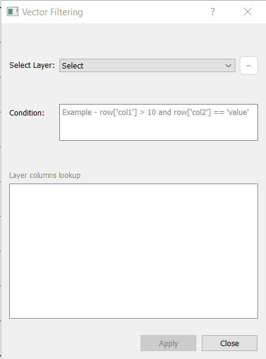
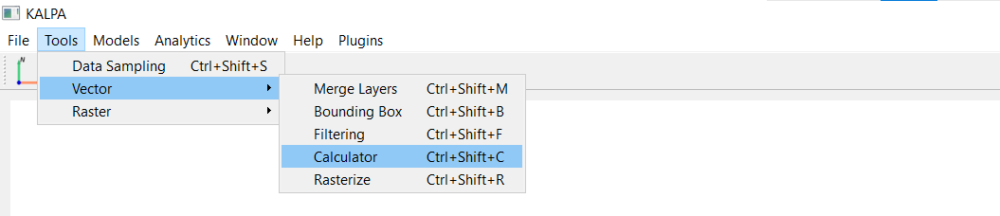
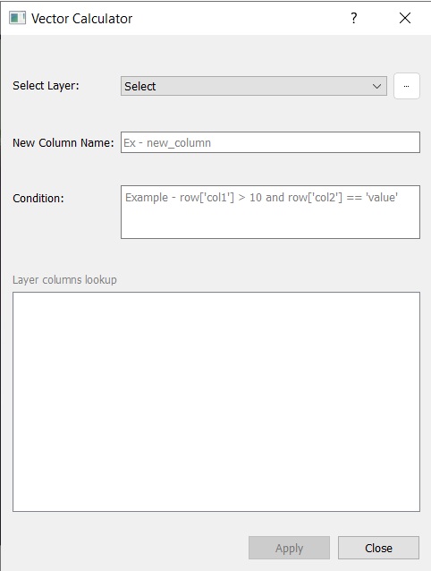
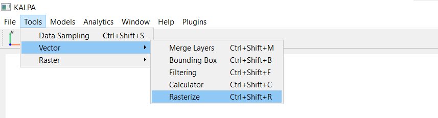
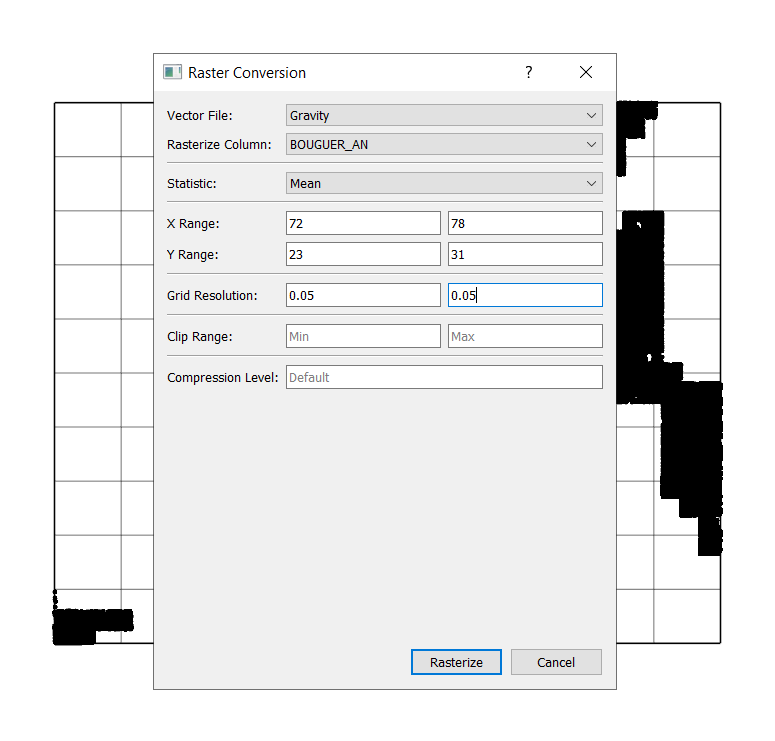
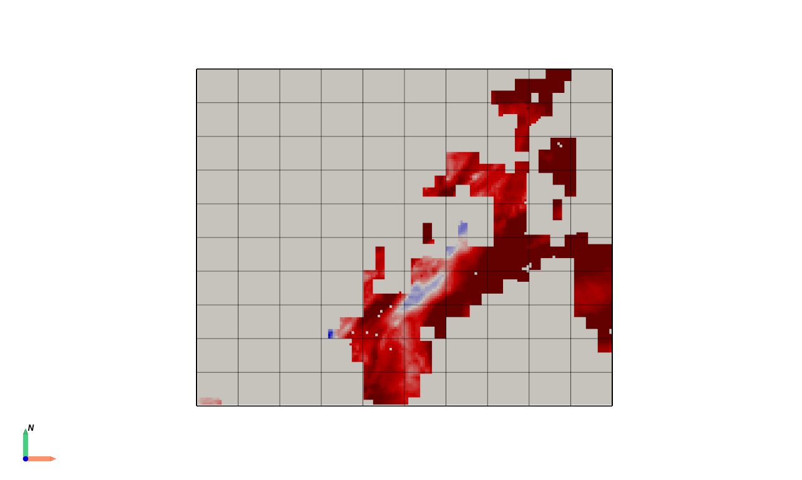

Vector operations#
Vector operations in Kalpa allow users to perform various manipulations and analyses on vector data layers. These operations include merge vector layers, defining area of interest (AOI), vector filtering and calculator, and vector to raster conversion. This section provides an overview of the available vector operations and how to use them effectively.
Merge Vector Layers#
The Merge Vector Layers operation enables users to combine multiple vector layers/shapefiles into a single GeoPackage file (.gpkg). This is particularly useful for combining different datasets created for Geodata Engineering using Kalpa.
Function Overview#
Navigate to Tools > Vector > Merge Layers to open the merge layers window.

Select the vector layers you want to merge from the list of loaded layers.
Choose the merge direction:
Column: Joins layers side by side, combining their features. Both layers/datasets should have the same number of rows for this operation.
Row: Stacks layers on top of each other based on a common attribute/feature.

Click Merge to execute the operation. The merged layer will be saved as a new GeoPackage file (.gpkg) and added to the Layer Panel.
Defining Area of Interest (AOI) using Bounding Box#
The Bounding Box tool allows users to define a rectangular area of interest (AOI) based on the extent of an existing raster or vector layer or by manually specifying coordinates (X and Y Range). This AOI can then be used for various analyses and operations within Kalpa.
Function Overview#
Navigate to Tools > Vector > Bounding Box to open the bounding box window.

Select a layer or manually enter the X and Y coordinate ranges.
Click Create Bounding Box to generate the AOI. The bounding box will be saved as a new vector layer in GeoPackage format (.gpkg) and added to the Layer Panel.


Vector Filtering#
The VectorFiltering function allows you to filter a vector layer using custom conditions written in Python’s Pandas-style operations.
Function Overview#
The VectorFiltering function applies a condition to filter rows in a vector dataset and returns the filtered result.
Key Arguments:
selected vector layer.
filter_condition: A Python condition for filtering rows. The condition uses the format:row['column_name'] <condition> valueYou can combine multiple conditions using logical operators like
and,or, andnot.

Single-Column Based Filtering#
Scenario: Filter all rows where the
Populationcolumn is greater than 1,000.Condition String:
row['Population'] > 1000
Multi-Column Based Filtering#
Scenario: Filter rows where the
Populationis greater than 1,000 and theCitystarts with the letter ‘C’.Condition String:
row['Population'] > 1000 and row['City'].startswith('C')
Filtering Using Equality Conditions#
Scenario: Filter rows where the
Citycolumn is equal to ‘B’.Condition String:
row['City'] == 'B'
Combining Conditions with OR#
Scenario: Filter rows where the
Populationis less than 1,000 or theCitystarts with ‘A’.Condition String:
row['Population'] < 1000 or row['City'].startswith('A')
Filtering by Distance (Geospatial Attributes)#
Scenario: Filter rows where the distance to a fault line is less than 5 km.
Condition String:
row['Fault_Dist'] < 5
Filtering Rows with Numerical Ranges#
Scenario: Filter rows where
Populationis between 500 and 1,500.Condition String:
500 <= row['Population'] <= 1500
Filtering Rows Based on String Patterns#
Scenario: Filter rows where the
Cityname contains the letter ‘a’ (case-insensitive).Condition String:
row['City'].str.contains('a', case=False)
Filtering Rows with Missing or Null Values#
Scenario: Filter rows where the
geometrycolumn isNone(missing).Condition String:
row['geometry'] is None
Filtering Rows Based on Multiple Conditions (Advanced)#
Scenario: Filter rows where
Populationis greater than 1,000, and theCitydoes not start with ‘A’.Condition String:
row['Population'] > 1000 and not row['City'].startswith('A')
Filtering Rows Using Custom Functions#
Scenario: Use a custom function to filter rows where the
Cityname length is greater than 1 character.Condition String:
len(row['City']) > 1
Filtering Geospatial Data by Attribute and Proximity#
Scenario: Filter rows where faults are older than 50 million years and within 10 km of the grid points.
Condition String:
row['Fault_Age'] > 50 and row['Fault_Dist'] < 10
Filtering Using Logical OR Conditions#
Scenario: Filter rows where the
Cityis either ‘A’ or ‘C’.Condition String:
row['City'] in ['A', 'C']
Filtering by Area or Length Attributes#
For vector datasets with polygons or lines, you can filter by geometric properties such as area or length.
Scenario: Filter polygons where the area is greater than 1,000 square meters. - Condition String:
row['geometry'].area > 1000Scenario: Filter line features where the length is less than 500 meters. - Condition String:
row['geometry'].length < 500
Tips for Writing Filtering Conditions#
Use Logical Operators: Combine conditions with
and,or, ornotto create complex queries.Check Data Types: Ensure your column data types match the condition. Numeric values should not be compared to strings.
Handle Missing Values: Use Pandas-style operations like
row['column'].notnull()to filter out rows with missing data.Validate Columns: Ensure the columns used in filtering exist in the dataset.
Optimize Conditions: Use simple, efficient conditions to avoid unnecessary computational overhead.
Test Conditions: Before applying complex filters, test them on a small subset of data to ensure correctness.
Export Results: Save filtered datasets for further analysis or visualization.
Vector Calculator#
The Vector Calculator feature in Kalpa allows you to perform advanced calculations on the columns of a vector dataset (GeoDataFrame) and save the results as a new column. This is particularly useful for geospatial data engineering, statistical analysis, and feature generation for machine learning.
Using the Vector Calculator operation, you can define custom operations to compute new columns based on existing data in a vector layer. This chapter guides you through the process of using the Vector Calculator, including practical examples.
Function Overview#
Navigate to Tools > Vector > Calculator to open the vector calculator window.

Select the vector layer on which you want to perform calculations.
Define the New Column Name: Choose a descriptive name for the column that will store the calculated values.
Write the Operation Code: Use Python expressions to define the calculation. Examples:
row['column1'] + row['column2']row['column1'] * 1.5len(row['city_name'])
Click Apply to execute the operation. The new column will be added to the vector layer.

Examples#
1. Basic Arithmetic Operation
Add two columns col1 and col2 to create a new column sum_col:
sum_col
row['col1'] + row['col2']
2. Scaling a Column Multiply a column value by a constant factor:
scaled_value
row['value'] * 1.5
3. String Length Calculation
Create a column representing the length of strings in city_name:
city_name_length
len(row['city_name'])
4. Conditional Calculation
Create a binary column high_population based on a threshold:
high_population
1 if row['population'] > 1000 else 0
5. Combining String Values
Merge city and state into a single Location column:
Location
f"{row['city']}, {row['state']}"
6. Calculating Distance to a Reference Point Calculate the distance of each geometry to a reference point:
distance_to_point
row['geometry'].distance(reference_point)
7. Geometric Area Calculation Compute the area of each geometry (for polygons):
area
row['geometry'].area
8. Custom Transformations Apply a logarithmic transformation to a numeric column:
log_value
math.log(row['value'])
Using the Results#
Once calculations are completed, you can:
Visualize the new column directly in Kalpa’s interface.
Use the updated vector layer for further geospatial or statistical analysis.
Export the enriched dataset as a GeoPackage (.gpkg) file or other supported formats using Kalpa’s export options.
Best Practices#
Column Names Use clear and descriptive names for new columns to keep the dataset understandable.
Error Handling Check your Python expressions for syntax errors or invalid column references before applying them.
Performance Avoid overly complex computations on large datasets to maintain good performance.
Documentation Keep a record of all applied transformations for reproducibility and future reference.
Vector to Raster Conversion (Rasterization)#
The Rasterize operation allows users to convert vector data (points, lines, polygons) into raster format. This process is essential for various geospatial analyses and visualizations that require raster data.
Function Overview#
Navigate to Tools > Vector > Rasterize.

Select the vector layer to be rasterized.
Choose the attribute/column from the vector layer.
Select the statistical operation. Following operations are supported:
Mean: Average value of all vector features within each raster cell.
Median: Median value of vector features within each raster cell.
Count: Number of vector features that fall within each raster cell.
Standard Deviation (std): Standard deviation of vector feature values within each raster cell.
Sum: Total sum of vector feature values within each raster cell.
Min: Minimum value among vector features within each raster cell.
Max: Maximum value among vector features within each raster cell.
Define the latitude and longitude extent for the output raster (if required, otherwise leave it to default to use the vector layer extent).
Define the output raster resolution (in degrees).
Clip Range: Restrict the minimum and maximum values of the output raster for the selected vector attribute. (You can also edit these once the output raster will be added to the Layer Panel).
Define the compression level (e.g., 1,2,3…,9). (Default: 4).

Click Rasterize to execute the operation. The resulting raster layer will be added to the Layer Panel.
